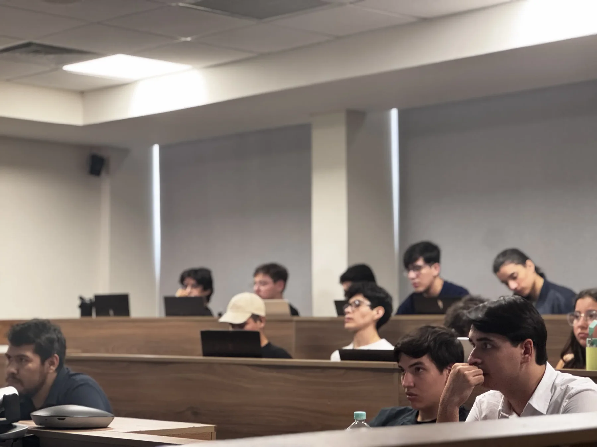
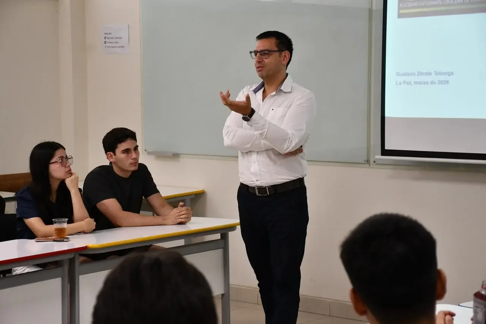
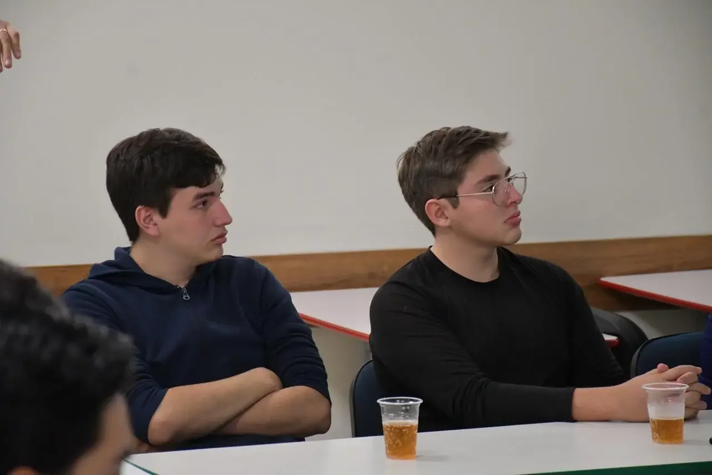
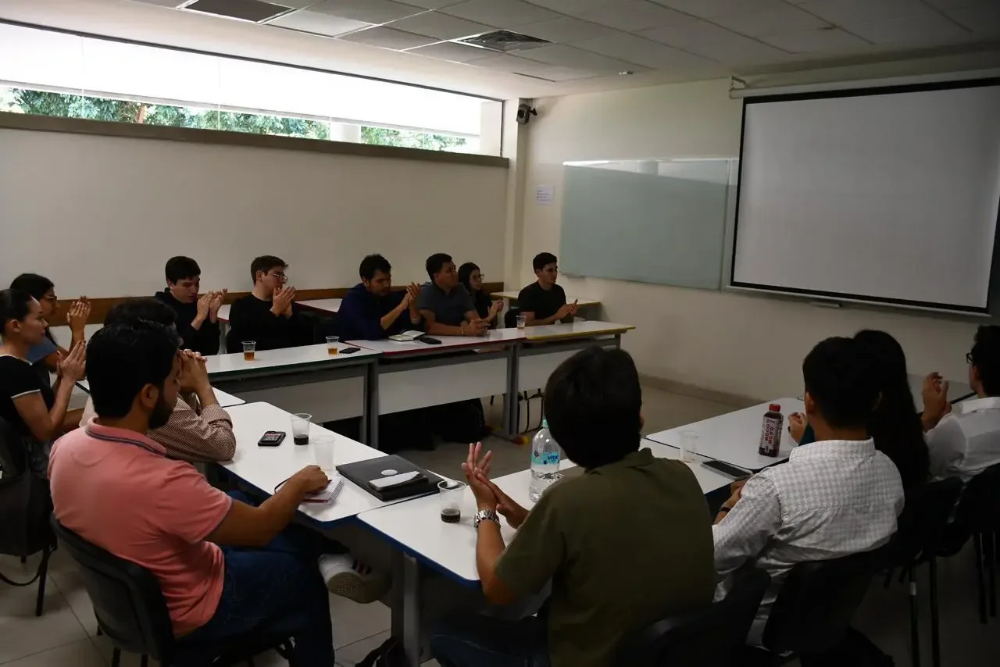

Jornada Académica
Participación del público en un espacio de intercambio académico, investigación y discusión económica.
Vida institucional

Participación del público en un espacio de intercambio académico, investigación y discusión económica.

Gustavo Zárate introdujo el análisis sobre la evolución del precio del gas, el sistema eléctrico y sus posibles efectos económicos.

Espacio de conversación y análisis sobre combustibles, energía y desafíos económicos de mediano plazo.

Espacio de conversación y análisis sobre combustibles, energía y desafíos económicos de mediano plazo.
Nuestra Comunidad
Desde Santa Cruz, articulamos publicaciones, actividades académicas, formación y participación interna para conectar el aprendizaje con los fenómenos que transforman a Bolivia y al mundo. Nuestra comunidad existe para que la economía no se quede en el aula: buscamos abrir conversaciones relevantes, formar criterio propio y proyectar una generación capaz de entender, cuestionar y aportar con responsabilidad.
Ejes de trabajo
Investigación, comunidad y debate como base de la actividad académica.
Convertimos preguntas económicas en análisis, datos y publicaciones con criterio académico.
Articulamos estudiantes, áreas internas y espacios de aprendizaje para fortalecer capital humano.
Leemos los fenómenos actuales con rigor, contraste de ideas y vocación de discusión pública.
Agenda
Invitaciones, encuentros y espacios académicos.
Análisis económico sobre combustibles, bloqueos, precios y sus efectos en la economía cotidiana.
Un nuevo espacio institucional para compartir investigación, aprendizaje y conversación académica entre estudiantes.
Conoce las áreas disponibles y envía tu postulación.